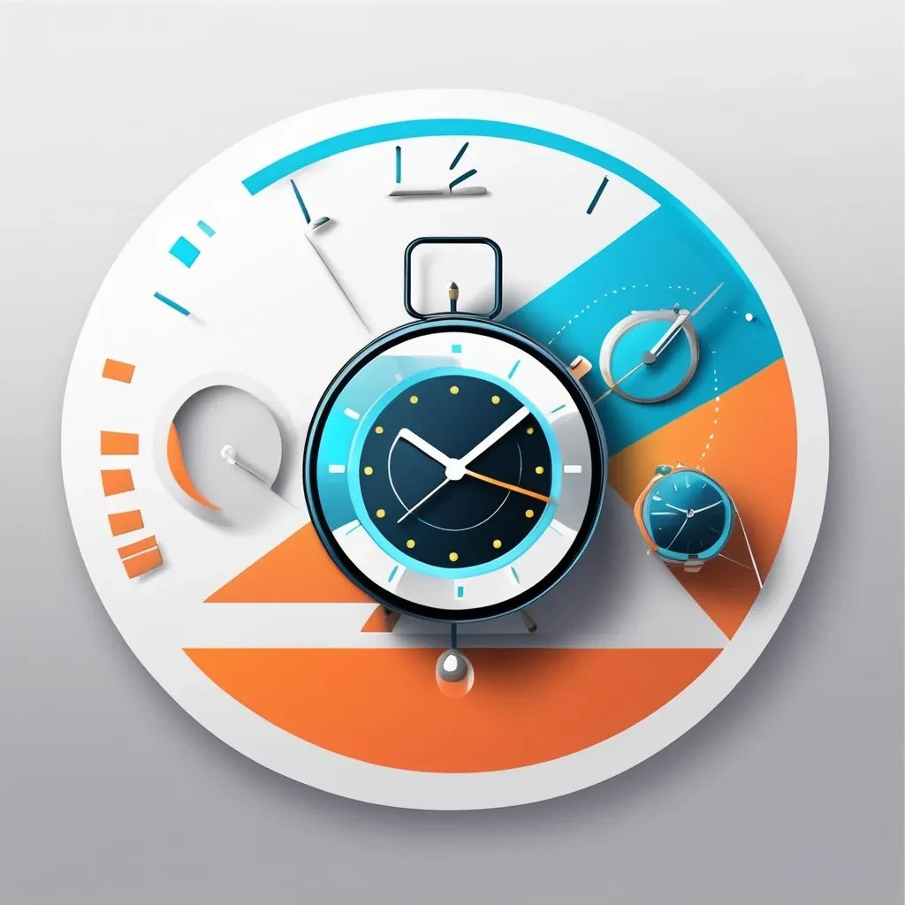

Welcome to TrackIT

Choose Your Theme
Theme settings will be saved for
your next visit
What is TrackIT?
TrackIT is a powerful project management tool designed to help teams collaborate efficiently and track progress effectively.